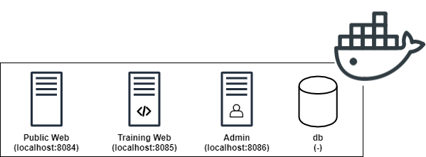

SSSS’20 Playground (Short version)¶
Welcome to the Less is more playground for SSSS’20. In this tutorial, you will get hands on experience with using our pipeline to debloat a phpMyAdmin web application. You will become familiar with the debloating administration panel, and see how a real exploit is stopped after debloating. You are following the short version of this playground.
Note
Throughout this tutorial, “Action Items” marked with icon, are concrete tasks that you need to follow.
There is also “Information Items” marked with icon. These items provide the context about the task at hand or the idea behind it. While it is highly suggested to read through them, there are no concrete steps accompanied by them.
Contents
Installation¶
Note
Skip the installation section for SSSS’20 event as the environment has already been setup for you.
Installation details
Download the project files debloating_phpMyAdmin.tar.gz
Decompress the tar file
tar zxvf debloating_phpMyAdmin.tar.gzRun
docker-compose up -din the root directoryYou can view the logs using
docker-compose logs -f -t
Docker Containers¶
Public Web: This docker container is the public side of your application. It is accessible on http://localhost:8084. Public internet users will interact with the applications over this port. No training and code coverage recording is performed on this container. You will mount your attacks on this container.
Training Web: This container is the training side of your application. It is accessible for trusted users during your training phase. It is accessible on http://localhost:8085. You would run Selenium and Monkey tests against this container.
Admin: This container hosts the admin panel as well as management phpMyAdmin instance of the application. It is used to view the debloating stats and perform debloating. It is accessible on http://localhost:8086.
db: This container hosts the databases for your web applications as well as the code coverage information. It has no public interface but is accessible to other docker containers through the “db” hostname.
Note
The same web application files are mounted as a volume on web and admin containers. That means the “web” directory includes the same files that you would see under “/var/www/html/” inside the docker containers.
The credentials to log in to phpMyAdmin is: username: root, password: root.
1. Accessing The Containers [Video 0:26]¶
You can run docker ps to see if the containers are started already. If you don’t see the containers, navigate to cd /home/ubuntu/debloating_phpMyAdmin/ and run docker-compose up -d. This will start the containers. You can verify this using docker ps again.
If you need shell access to any of the containers, you need to run the /bin/bash process inside the containers. We have provided shell scripts to aid with this process. These scripts will find the container id and execute the /bin/bash process for you. The scripts to access the containers are in the root directory of the applicaton which is currently at /home/ubuntu/debloating_phpMyAdmin/. For web containers, the web applications are under /var/www/html/ and the database used for debloating panel is under db container named code_coverage.
Public Web:
./ssh_public_web.shTraining Web:
./ssh_training_web.shAdmin:
./ssh_admin.shdb:
./ssh_db.sh
2. Adding New Applications To The Pipeline [Video 0:53]¶
Before we debloat a web application, we first have to add its information and track its source files from our admin debloating panel. You can take a look at the admin panel walkthrough for more detail: https://debloating.com/walkthrough.html
Steps to follow:
Note
Preparing the destructors requires admin panels access to modify the source code of our target web application. The same “web” directory which includes web application files on the host machine is mounted to “/var/www/html” directory under web and admin docker containers. If you see a permission error while rewriting the destructors, use ./ssh_admin.sh script to get into the admin container, navigate to the target web application directory (cd /var/www/html/phpMyAdmin-4.4.15.6-all-languages) and change the owner of the files to the web server user (chown -R www-data:www-data .).
3. Adding The CVE Information To The Vulnerability Database [Video 2:39]¶
By adding the information about known vulnerabilities, we can identify if debloating is able to remove them before actually modifying the source of our applications. The first step to add each CVE to our database is to identify the files and lines within those files that make the application vulnerable. In this tutorial, we focus on “CVE-2016-5734”.
Steps to follow:
Solution
This vulnerability affects the
preg_replacefunction. By injecting the/eflag as input to this function we can make PHP runevalon the output of regex find and replace. To do this, we have to inject/eand also use anull byteto terminate the rest of the string to make this exploit work. Read more at https://bitquark.co.uk/blog/2013/07/23/the_unexpected_dangers_of_preg_replace
Solution
Solution
libraries/TableSearch.class.php
libraries/Tracker.class.php
libraries/plugins/export/ExportSql.class.php
libraries/tbl_columns_definition_form.lib.php
test/libraries/core/PMA_warnMissingExtension_test.php
test/libraries/core/PMA_warnMissingExtension_test.php is included in the patch but since it is a unit test, it is only accessible locally and does not directly contribute to the vulnerability, also it is not exploitable.
/home/ubuntu/debloating_phpMyAdmin/web/phpMyAdmin-4.4.15.6-all-languages/ directory mounted under your users home directory on the virtual machine and find the lines that were removed or changed from the vulnerable version of the application (red lines). If you are using gedit over VNC, you can enable line numbers by clicking on the cog icon, under preferences, click display line numbers.Solution
libraries/TableSearch.class.php: 1041
libraries/Tracker.class.php: 662
libraries/plugins/export/ExportSql.class.php: 854
libraries/tbl_columns_definition_form.lib.php: 488
In the following example, the vulnerability is on line 448 and the first executable inside the function is on line 447. So in this case we note down PMA_getNumberOfFieldsFromRequest():447. Make sure to write down both the function name as well as the line numbers, we will need both of them to populate our database later. In our debloating pipeline, we use this line number to mark functions as covered or not, the function name is only used as a label in the admin panel (i.e., you can include or ignore function parameters when adding function name to the database).

Solution
libraries/TableSearch.class.php:_getRegexReplaceRows($columnIndex, $find, $replaceWith, $charSet):1032
libraries/Tracker.class.php:handleQuery($query):617
libraries/plugins/export/ExportSql.class.php:getTableDef( $db, $table, $crlf, $error_url, $show_dates = false, $add_semicolon = true, $view = false, $update_indexes_increments = true, $aliases = array() ):755
libraries/tbl_columns_definition_form.lib.php:PMA_getHtmlForTransformation($columnNumber, $ci, $ci_offset, $available_mime, $columnMeta, $mime_map, $type_prefix ):483
CVE tab. You can enter the CVE id and leave Name and Description fields empty. Under the Software Vulnerabilities tab, mark phpMyAdmin 4.4.15 as the software version that is affected by this CVE. Then, under the Vulnerable Files Mapping tab, add the path to each file from the root of the application. In a similar fashion, add the Vulnerable Lines Mapping and Vulnerable Functions Mapping for the same CVE.4. Finding And Running The Exploit [Video 10:57]¶
To demonstrate the power of debloating in removing actual vulnerabilities, we focus on available exploits. Your task for this step is to find the exploit code for CVE-2016-5734 vulnerability. Websites such as https://www.exploit-db.com/ and https://github.com/ are good sources to look for these exploits.
Once you download the exploit code, run it against the public interface of your web application which is located at http://localhost:8084/phpMyAdmin-4.4.15.6-all-languages.
This exploit takes advantage of a vulnerablity in preg_replace function within PHP. Normally, this function takes a regular expression, applies it to a text and replaces every occurance with another text. By supplying the /e modifier, PHP will interpret the output of this function as PHP code and execute it, essentially turning it into an eval function call.
By appending /e to our regex and using a null string terminator, we can run arbitrary code on target system and achieve RCE.
In the public exploit for this vulnerability, but default, the payload is set to system('uname -a'); but it can be changed to any arbitrary code that will be executed under the PHP/Apache user permissions.
Solution
Exploit execution:
python3 exploits/40185.py http://localhost:8084/phpMyAdmin-4.4.15.6-all-languages -u root -p root -d mysqlResult: x bb8440b2284f 4.19.84-microsoft-standard #1 SMP Wed Nov 13 11:44:37 UTC 2019 x86_64 GNU/Linux
Requires python requests library to be installed.
Note
If you are following the video, skip from 12:07 to 17:23 for next section.
5. Using The Application & Recording The Code Coverage¶
In order to debloat the application, first we have to record a representative code coverage. This way, we can identify the parts of the application that are required by the users. For instance, if users exercise the create/drop database functionality, we want to keep it and remove the export functionality if it has never been used.
In this section, we interact with the “training web” container hosted over http://localhost:8085/phpMyAdmin-4.4.15.6-all-languages.
http://localhost:8085/phpMyAdmin-4.4.15.6-all-languages and start navigating to several pages within the application. This way, the debloating engine will know which features are required by the users and will remove the rest.Under the same page:
File Coverage shows the vulnerable files and whether they were used during that specific test. Similarly, you can use the multi select checkbox and the buttons on top to get the same information for the union of multiple tests.
Function Coverage reports whether a vulnerable function has been triggered during the tests or not. Notice that only the vulnerable functions are shown where the parent file has been covered.
Line Coverage shows whether the specific lines for the specific CVEs were executed during tests.
By clicking on individual test groups, you can see specific files and the line numbers that were executed within those files.
You should see that some files related to this vulnerability has been covered but none of the functions nor the lines are triggered. As a result, function debloating should be able to fully remove this CVE from our applications and prevent exploitation.
Solution
File
libraries/tbl_columns_definition_form.lib.phpis covered.File
libraries/Tracker.class.phpis covered.File
libraries/plugins/export/ExportSql.class.phpis not covered.File
libraries/TableSearch.class.phpis not covered.None of the functions or lines are covered.
ssh_training_web.sh script to get a shell into the corresponding container. Navigate to /var/www/html/ directory where the applications are.phpmetrics phpMyAdmin-4.4.15.6-all-languages/. This will take a while and generate results such as Logical Lines Of Code and Average Cyclomatic Complexity by Class. Take a note of these results, we will compare the results after debloating as well.Solution
Executing system analyzes…LOC Lines of code 90473Logical lines of code 57049…Complexity Average Cyclomaticcomplexity by class 23.98Average Relative system complexity 520.08Average Difficulty 16.13…Done
6. Debloating The Application [Video 19:17]¶
Once you are happy with the training, we can go ahead and debloat the unused parts. Navigate to the admin panel to the Debloating tab: http://localhost:8086/admin/software_file/description. Here, we have the option of file and function debloating. Remember that function debloating is a superset of file debloating where both unused files and unused functions are removed. Let’s click on “Debloat Functions” button.
This step can take a while as we are rewriting the source code of the whole application. If everything goes well, the text output will list the files and functions and whether they were covered, hence preserved or unused and removed.
7. Verifying The Functionality Of The Application [Video 20:02]¶
It’s time to go back to the application and start using it. For this step, we will be using http://localhost:8084/phpMyAdmin-4.4.15.6-all-languages/ since we do not want to train the application further. Repeat the tasks that you did before and make sure everything works. These include tasks such as login, and the items covered by the selenium scripts. Depending on the completeness of your tests, you will have a more functional application after debloating.
If there was an issue with the training part, you might try to use a feature that has been removed. If this happens, you will usually receive an error through the application UI. In some cases where an AJAX call fails, you can look at the Apache error.log to identify whether a removed file or function has been called. You can view the logs on Pulic Web container by first extracting the container id using docker ps and then docker logs -f [container_id] | grep Removed.
If you think that you need to go back and retrain the application, first, revert the original copy of the application from the web/original directory.
Navigate to the “web” directory.
cp -R original/phpMyAdmin-4.4.15.6-all-languages .chmod -R 777 phpMyAdmin-4.4.15.6-all-languages/chmod 644 phpMyAdmin-4.4.15.6-all-languages/config.inc.phpNavigate to
http://localhost:8086/admin/software_file/descriptionand rewrite destructors.
Now that we have restored the original non-debloated application, you can go back to the training interface (http://localhost:8085/phpMyAdmin-4.4.15.6-all-languages/) and rerun our tests to complete the training phase. Repeat the debloating and continue to this step until you are satisfied with the preserved functionality within the debloating application.
Note
Turn off the docker containers: Navigate to
~/debloating_phpMyAdmin/, typedocker-compose down.Restore original files: Remove
~/debloating_phpMyAdmin/directory and decompress the tarballtar zxvf debloating_phpMyAdmin.tar.gz.Rebuild docker containers: Navigate to
~/debloating_phpMyAdmin/and typedocker-compose up -d, you can usedocker psto make sure all four containers are running at this point.Set the file permissions: Using
chmod -R 777 ~/debloating_phpMyAdmin/web/phpMyAdmin-4.4.15.6-all-languages/andchmod 644 ~/debloating_phpMyAdmin/web/phpMyAdmin-4.4.15.6-all-languages/config.inc.php. Then use./ssh_admin.shand take ownership of web fileschown -R www-data:www-data /var/www/html/phpMyAdmin-4.4.15.6-all-languages.
8. Running The Exploit On The Debloated Version [Video 20:22]¶
This exploit uses a vulnerability in table find and replace functionality within phpMyAdmin. If this feature was never touched during training, debloating removes it from the application. As a result, the exploit attempts fail. Simply rerun the exploit and observe the result.
Solution
Rerunning same as before, this will either output:
- fail to parse the JSON because the field that its expecting is not there or- Exploit failed!Try to manually set exploit parameters like –table, –database and –token. Remember that servers with PHP version greater than 5.4.6 is not exploitable, because of warning about null byte in regexp
9. Source Code Metrics After Debloating [Video 20:52]¶
Now it’s time to run phpmetrics again from the “training web” container and see the reduction in lines of code and cyclomatic complexity: phpmetrics phpMyAdmin-4.4.15.6-all-languages/
Solution
Similar to previous step with reduced lines of code and reduced cyclomatic complexity.
Executing system analyzes…LOC Lines of code 24877Logical lines of code 14176…Complexity Average Cyclomaticcomplexity by class 24.85Average Relative system complexity 334.41Average Difficulty 13.03…Done
Working With Other Debloated Applications¶
If you are interested in working with other application templates in our dataset, under debloating_Mediawiki and debloating_WordPress we have provided docker-containers with original and debloated version of applications. You should shutdown the existing container and start the other containers using docker-compose down in debloating_phpMyAdmin directory and docker-compose up -d in Mediawiki or WordPress directories.